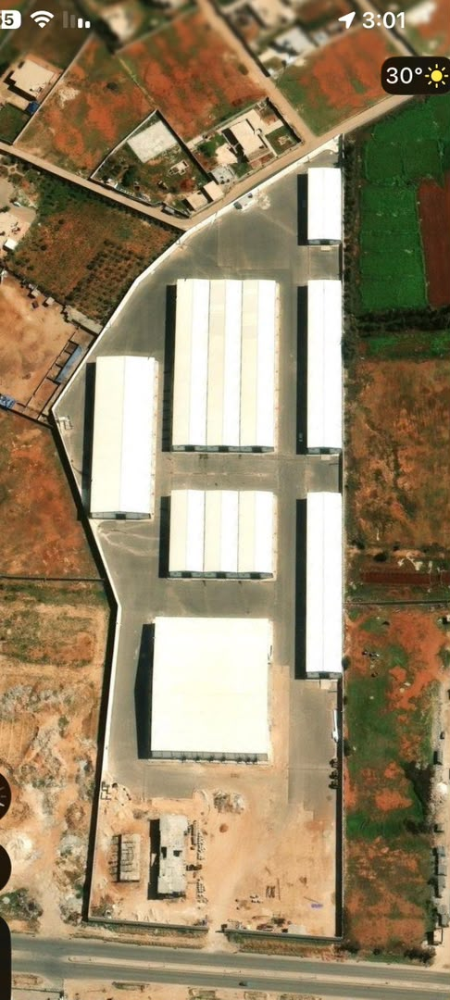
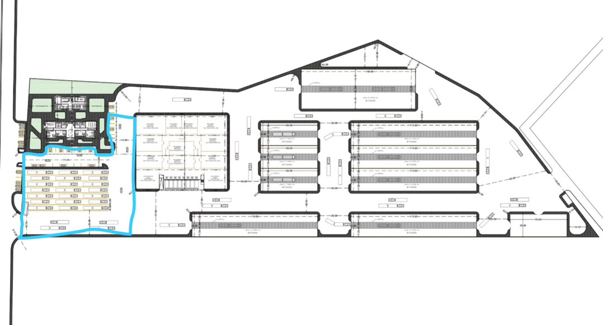

DOCUMENT NO. BRZ-WH-155-2026REV. 01
برندزو
BRANDZO COMMERCIAL LOGISTICS
تقرير متطلبات ومقترحات
تحسين وتطوير المستودعات
Commercial Logistics Warehouse Development Report
CONFIDENTIAL – FOR INTERNAL USE ONLY
المشاهدات الميدانية والمخططات المعمارية

المنظر الجوي للمستودعات – موقع أبوهادي 155

المخطط المعماري للتوزيع الداخلي للمستودعات
يتضح من المشهد الجوي أن المنشأة تضم مجموعة من المستودعات الكبيرة ذات الأسقف المعدنية المائلة موزعة بنظام منتظم داخل محيط واحد، مع وجود مساحات مفتوحة تصلح كمناطق مناورة للشاحنات ومواقف. يظهر المخطط المعماري التوزيع الداخلي للمساحات والمناطق الوظيفية.
هذا التقرير قابل للمراجعة والتعديل بعد إجراء مسح ميداني تفصيلي وأخذ القياسات الدقيقة من قِبل فريق هندسي متخصص. جميع المواصفات تعتمد على أفضل الممارسات الدولية وقد تستلزم تكييفاً وفق اللوائح المحلية.
01الملخص التنفيذي4
02منظومة الحماية من الحرائق5
03الغرف الكهربائية في كل مستودع6
04الرامب الخارجي ومناطق التحميل7
05منظومة المراقبة بالكاميرات CCTV8
06المبنى الإداري9
07مبنى سكن الموظفين9
08بوابة الأمن والتحكم بالدخول10
09تخطيط حركة المرور والدوران10
10نظام الرفوف البالية (Pallet Racking System)11
11مناطق الاستلام والفرز13
12منطقة الصرف والشحن13
13توزيع العائلات والمناطق14
14ورشة الصيانة الداخلية15
15محطة شحن الرافعات الكهربائية15
16إدارة النفايات وأرضية نظيفة16
17طلاء أرضيات الإيبوكسي الصناعي17
18الصحة والسلامة المهنية (HSE)18
19محطة الوقود الداخلية19
20منطقة انتظار السائقين المبردة19
21مولدات الطاقة الاحتياطية20
22منظومة التكييف والمكيفات في المخازن21
المراجع والمعايير الدولية المعتمدة
| الرمز | المعيار الدولي | المجال |
|---|
| NFPA 13/20/25/72/101 | أنظمة الحريق والإنذار والسلامة | الحماية من الحرائق |
| BS EN 12845 | الرشاشات المائية – أوروبي | الحماية من الحرائق |
| IEC 61439 / 60364 / 62040 | اللوحات والتمديدات وUPS | الكهرباء |
| EN 15512 / FEM 10.2.07 / EN 15635 | الرفوف والتثبيت والفحص | الرفوف |
| EN ISO 3691 | الرافعات الشوكية – السلامة | المعدات |
| OSHA 1910.178 | الرافعات الصناعية | السلامة المهنية |
| ISO 45001 / 50001 / 7010 | السلامة / الطاقة / اللافتات | إدارة شاملة |
| EN 62676 | أنظمة المراقبة بالفيديو | الأمن |
| ASTM D3359 / BS 8204-2 | اختبارات الإيبوكسي | الأرضيات الصناعية |
| ISO 8528 | مولدات الاحتياط الكهربائية | الطاقة الاحتياطية |
| AHRI 1100 / ASHRAE 15 | معدات التبريد والتكييف | التبريد والتكييف |
| EN 442 / ISO 23953 | غرف التبريد والتجمد – التصميم والأداء | التبريد والتكييف |
يتناول هذا التقرير الهندسي التخصصي تقييماً شاملاً للمنشأة اللوجستية التجارية الحالية في موقع أبوهادي 155، ويقدم توصيات تقنية مفصّلة بهدف الارتقاء بمستوى الأداء التشغيلي وتعزيز معايير السلامة وتحسين الكفاءة اللوجستية وفق أحدث المعايير الدولية.
تضم المنشأة مجموعة من المستودعات الكبيرة الموزعة بنظام منتظم ضمن محيط أمني موحّد. يتناول التقرير اثنين وعشرين محوراً هندسياً رئيسياً.
المحاور الهندسية الرئيسية
أبرز المؤشرات المقترحة
144TB
تخزين كاميرات المراقبة
3mm
سماكة إيبوكسي الأرضيات
الركيزة الأساسية في أي منشأة لوجستية. الامتثال لـ NFPA 13 وNFPA 72 وNFPA 25 وBS EN 12845.
أولاً: نظام الرشاشات التلقائية
رشاشات ESFR (K-25 أو K-33) للرفوف > 3.5 م + In-Rack Sprinklers داخل الصفوف + Upright/Pendant بحسب السقف.
| المعيار | القيمة | المرجع |
|---|
| كثافة التدفق | ≥ 12.2 mm/min | NFPA 13 §19 |
| مساحة التصميم | ≥ 139 م² | NFPA 13 §19.3 |
| ضغط التشغيل | ≥ 1.2 bar | EN 12845 |
| التباعد | ≤ 3.7 م | NFPA 13 §8.6 |
| حرارة الانصهار | 68°C – 93°C | ISO 6182 |
| معامل K | K-25 = 360 L/min @ 1 bar | NFPA 13 |
| ارتفاع التغطية | حتى 12 م (ESFR) | NFPA 13 §20 |
ثانياً: خزان المياه ومحطة الضخ
| المكوّن | المواصفة | المرجع |
|---|
| خزان الحريق | ≥ 500 م³ | خرسانة أو FRP | NFPA 22 |
| المضخة الرئيسية | 750 GPM @ 100 PSI | ديزل + كهربائي | NFPA 20 |
| الاحتياطية | 100% طاقة الرئيسية | NFPA 20 |
| مضخة Jockey | 25 GPM | تلقائي | NFPA 20 |
| مدة الإطفاء | ≥ 60 دقيقة | NFPA 13 |
| خط المياه | ≥ 150 mm | حديد مطيل | NFPA 24 |
ثالثاً: الإنذار والكشف المبكر
- VESDA في المناطق الحساسة | كاشفات حرارية مزدوجة ≤ 50 م²/كاشف
- صفارات 85 dB @ 3م + Strobes كل 30 م | FACP متوافقة EN 54 | ربط CCTV | Voice Evacuation
رابعاً: معدات الإطفاء الثانوية
| المعدة | المواصفة | التوزيع |
|---|
| طفاية CO₂ | 5 كغ | 1/غرفة كهربائية |
| طفاية ABC | 12 كغ | EN 3 | كل 200 م² |
| Hose Reel | 19 mm | 30 م | كل 30 م |
| Hydrant Cabinet | DN65 + 20م | خارج كل مستودع |
| هيدرانت خارجي | DN100 | ≥ 7 bar | كل 60 م |
خامساً: ممرات الإخلاء
- عرض ≥ 1.2 م | Exit Signs ≥ 50 lux | أبواب بـ Panic Bar | مسافة ≤ 45 م (NFPA 101)
اختبار سنوي وفق NFPA 25 مع توثيق معتمد. تدريب العاملين كل 6 أشهر.
- غرفة مستقلة ≥ 5.0×4.0 م (20 م²) | ارتفاع ≥ 3.0 م | ممر ≥ 1.0 م (NFPA 70) | باب EI120 يفتح للخارج | تهوية ≥ 8 مرات/ساعة لـ ≤ 35°C
| المعدة | المواصفة | المعيار |
|---|
| MDB | 4000A / 415V / IP54 / IK10 | IEC 61439-1 |
| SDB | 800-1600A | MCB/MCCB | IEC 61439-2 |
| Transformer | 11kV/0.415kV | ≥ 1000 kVA | Dyn11 | IEC 60076 |
| UPS | 20 kVA/phase | ≥ 2 ساعة | IEC 62040 |
| BMS | مراقبة لحظية | Modbus RTU | ISO 50001 |
| Earthing | TN-S | ≤ 1 أوم | IEC 60364-5 |
| RCCB | 30 mA | IEC 61008 |
الإنارة الصناعية
| المنطقة | الإضاءة | النوع |
|---|
| منطقة الرفوف | ≥ 300 lux | LED High Bay 150W IP65 | PIR |
| الاستلام والفرز | ≥ 500 lux | LED High Bay 200W IP65 | مستمر |
| الممرات | ≥ 150 lux | LED Linear 40W IP44 | PIR |
| الطوارئ | ≥ 10 lux | Emergency LED | ≥ 3 ساعات |
| الرامب | ≥ 200 lux | LED Flood 100W IP66 |
يُمنع تخزين أي مواد داخل الغرفة الكهربائية. لافتة "خطر – كهرباء عالية الجهد" وفق ISO 7010.
| العنصر | المواصفة |
|---|
| ارتفاع المنصة | 1.20 م ± 50 مم |
| ميلان الرامب | ≤ 10% | ≤ 8% للرافعات (OSHA) |
| نصف قطر الانحناء | ≥ 15 م |
| العرض | ≥ 4.5 م / مسار |
| منطقة مستوية | ≥ 20 م قبل الرامب |
| تحمّل الأرضية | ≥ 8,000 كغ/م² | خرسانة 300 مم |
| Non-Slip | R12 وفق DIN 51130 | مجاري كل 3 م |
- Dock Leveler: ±300 mm | ≥ 6,000 كغ | EN 1398 + CE
- High-Speed Door: ≥ 4.0×4.5 م | ≥ 1.5 م/ث | EN 13241
- Dock Bumpers (4/بوابة) | Dock Shelter | Wheel Chocks | Traffic Light
- كانوبي: ≥ 3.0×4.0 م | بوليكربونات | ميلان ≥ 5° | مجاري تصريف
| النوع | الدقة | IR | الحماية |
|---|
| Dome | 4MP | ≥ 20 م | IP67/IK10 |
| Bullet | 4MP | ≥ 40 م | IP67/IK10 |
| PTZ | 4K | ≥ 100 م | IP67/IK10 |
| Fisheye | 8MP | ≥ 15 م | IP66/IK10 |
| ANPR | 2MP | ≥ 25 م | IP67/IK10 |
- البوابة: PTZ + ANPR | محيط السور: Bullet كل 40 م | داخل المستودع: Fisheye 4/مستودع
- NVR ≥ 32 قناة | H.265+ | ≥ 144 TB | RAID-5 | UPS ≥ 4 ساعات | VLAN مستقلة
- غرفة مراقبة: ≥ 12 م² | Video Wall | ربط بإنذار الحريق
جميع الكاميرات عبر Cat6e FTP في مجاري معدنية. يُحظر الواي فاي.
≥ 400 م² على طابقين | ISO 45001
| الطابق | المساحة | المكونات |
|---|
| أرضي – استقبال | 180 م² | استقبال | أمن | مراقبة | أرشيف |
| أرضي – عمليات | 120 م² | مشرفين ×4 | عمليات | WMS |
| أول – إدارة | 160 م² | مدير + اجتماعات 20 | HR | مالية | تدريب |
| أول – راحة | 40 م² | استراحة | مطبخ | شرفة |
- Cat6e (≥ 4/مكتب) | VRF + HRV | Face Recognition | UPS ≥ 10 kVA | LED ≥ 500 lux | مصعد ≥ 8 أشخاص
| الوحدة | المواصفة | العدد |
|---|
| غرف مفردة | 12 م² + حمام | 10 |
| غرف ثنائية | 18 م² + حمام | 6 |
| دورات مياه مشتركة | 1/6 موظفين | 3 |
| مطبخ + غسيل + تلفزيون | 30 + 10 + 20 م² | 1+1+1 |
- مدخل مستقل ≥ 50 م عن العمليات | سياج فاصل | إنارة PIR | واي فاي ≥ 50 Mbps | مولد احتياطي
| العنصر | المواصفة |
|---|
| عرض البوابة | ≥ 8 م | مسربان 4م + 4م |
| Boom Barrier | ≥ 6 م | ≤ 4 ثوانٍ | ≥ 140 km/h |
| Truck Scale | ≥ 60 طن | ±20 كغ | تقرير آلي |
| ANPR | ≥ 95% نهاراً / 85% ليلاً |
| TMS | ربط WMS | رقم الشاحنة + السائق + الحمولة |
| دشمة الأمن | 4×3 م | مكيفة | زجاج بانورامي | UPS |
- بوابة الموظفين: Turnstiles | RFID + PIN/بصمة | ربط رواتب | بوابة ذوي احتياجات ≥ 900 مم
- التفتيش: سجل إلكتروني | مسح جوازات | مرآة أسفل السيارة | انتظار ≥ 5 شاحنات
المشغّل الأمني على علم بقائمة المركبات قبل 24 ساعة.
- خارجي: One-Way Loop | عرض ≥ 12 م | منحنيات ≥ 15 م | خرسانة ≥ 250 مم / ≥ 30 طن/محور
| الممر | العرض | المعيار |
|---|
| رافعة شوكية | ≥ 3.5 م | EN ISO 3691 |
| VNA | ≥ 1.7 م | EN ISO 3691 |
| مشاة | ≥ 1.0 م + حاجز | ISO 45001 |
| طوارئ | ≥ 2.4 م | NFPA 101 |
| مناورة رافعة | ≥ 5.0 م أمام الرامب | OSHA |
- Safety Bollards ≥ 100 مم | تقاطعات بارزة | إشارات أخضر/أحمر | لافتات عربية/إنجليزية
ممنوع تشغيل الرافعات في مناطق المشاة. تدريب إلزامي + رخصة تشغيل داخلية.
نظام تخزين الباليه الركيزة الأساسية. يعتمد على تخزين البضائع على منصات قياسية ثم رفعها على أرفف معدنية متعددة المستويات. التصميم وفق EN 15512:2020 وFEM 10.2.07.
أنواع الرفوف المقترحة
| النوع | مبدأ التشغيل | الملاءمة |
|---|
| Selective | وصول مباشر 100% – FIFO/LIFO | ممتاز – الأساس |
| Drive-In | داخل الرفوف – LIFO | موسمي فقط |
| Push-Back | دفع بالية – LIFO | تدوير بطيء |
| Flow Racking | جاذبية – FIFO تلقائي | غذاء/دواء |
| Double Deep | باليه خلف بالية | مع Reach Truck |
التوصية
Selective كأساس (100% وصول) + Drive-In للموسمي.
المواصفات الفنية
| العنصر | المواصفة | المعيار |
|---|
| ارتفاع العمود | 8.0 – 10.0 م | ≥ 1.5 مم | EN 15512 |
| تحمّل العمود | ≥ 15,000 كغ | EN 15512 |
| الشريط (Beam) | 2.7 م / 3 باليهات | ≥ 1.8 مم | EN 15512 |
| تحمّل الشريط | ≥ 2,500 كغ | EN 15512 |
| عمق الرف | 1.10 م (باليه 800×1200 أو 1000×1200) | FEM |
| أول مستوى | ≥ 200 مم من الأرض | EN 15512 |
| المستويات | 4-5 | الأخير طائر | حسب الارتفاع |
| وزن باليه | ≤ 1,200 كغ | EN 15512 |
| Base Plate | M16×150 مم | خرسانة ≥ C25 | FEM 10.2.07 |
حماية وفحص الرفوف
- Column Guards ≥ 400 مم | End-of-Aisle Barriers ≥ 60 مم | Row Spacers | Safety Net
- فحص كل 6 أشهر (EN 15635) | لوحة حمولة | أبيض=آمن أصفر=مراقبة أحمر=خارج الخدمة فوراً
لا تجاوز الحمولة. انحراف ≥ 3 مم = إخلاء فوري + فحص كامل.
| العنصر | المواصفة |
|---|
| المساحة | ≥ 200 م² أمام الرامب | 4 شاحنات |
| الارتفاع | خالية رفوف | ≥ 6 م |
| الأرضية | خرسانة + إيبوكسي | ≥ 8,000 كغ/م² |
| ميزان | 2.0×2.0 م | ±500 غ |
| مسح باركود | Scanner + Printer | ربط WMS |
| عزل (Quarantine) | 30 م² | مسيجة |
| إضاءة | ≥ 500 lux | CRI ≥ 80 |
- طاولات تعديل ارتفاع | Gravity Conveyors ≥ 3 م | Picking Trolleys ≥ 100 كغ | شاشة أوامر ≥ 32 بوصة | طابعة حرارية ≥ 150 ملصق/د | Stretch Wrap
- ≥ 200 م² مفصولة عن الاستلام بـ 15 م أو حاجز
- تجميع مؤشّر صفراء | شاشة مهام FIFO/LIFO | فحص جودة | محطة تغليف: طاولات + سرنفة + سيل
| الفئة | المعيار | الموقع | الرف |
|---|
| Fast A | > 3/شهر | قرب الرامب – سفلية | Selective أسفل 3 |
| Medium B | 1-3/شهر | وسط المستودع | Selective وسط |
| Slow C | < 1/شهر | بعيد – علوية | Drive-In / علوي |
| Seasonal D | موسمي | احتياطية | Drive-In |
| العائلة | المنطقة | اشتراطات |
|---|
| غذائية جافة | A – شمالي | رطوبة ≤ 65% | ≤ 25°C | FIFO |
| مبردة | Cold Room | 2-8°C | عزل 150 مم |
| مجمدة | Freezer | ≤ -18°C | مونيتور 24/7 |
| كيماويات | B – مستقلة | تهوية + حوض احتجاز |
| قابلة للاشتعال | سور مستقل | Flammable Store | CO₂ |
| إلكترونيات | C – مكيف | ≤ 50% رطوبة | ESD |
| مواد بناء | D – أرضية | ≥ 10,000 كغ/م² |
| HVG | Cage + CCTV | قفل مزدوج | إذن مسبق |
نظام ترقيم المواقع
A-05-R-02
المستودع A | صف 05 | يمين | مستوى 2
عنصر حيوي لضمان استمرارية التشغيل وتقليل أوقات التوقف.
- مساحة ≥ 60 م² | قريبة من تشغيل الرافعات | أرضية ≥ 10,000 كغ/م² | ارتفاع ≥ 5 م | بوابة ≥ 4.0 م
| التجهيز | المواصفة | الكمية |
|---|
| Overhead Crane | ≥ 3 طن | 1 |
| Floor Jack | ≥ 10 طن | 2 |
| طقم مفاتيح شامل | معدات ثقيلة | 2 |
| لحام كهربائي + غازي | إصلاح هياكل | 1 |
| Torque Wrench | ربط مسامير الرفوف | 2 |
- مخزن قطع غيار (≥ 20 م²): بطاريات | أحزمة | مرشحات | تايرات | seals | جرد دوري مرتبط WMS
- إدارة الصيانة: سجل إلكتروني | خطة PPM | عقد مع المورّد | مؤشرات MTBF/MTTR
يُمنع إصلاح الرافعات خارج الورشة. عزل المعطلة بلوحة صفراء + حواجز.
| العنصر | المواصفة |
|---|
| المساحة | ≥ 50 م² | جدار حريق ≥ 1 ساعة |
| الأرضية | مقاومة أحماض + تصريف |
| التهوية | ≥ 12 م³/ساعة/م² | طرد H₂ من الأعلى |
| الإضاءة | ≥ 200 lux | مقاومة انفجار Zone 2 |
- الشواحن: 24V/48V/80V ذكية | 8-10 ساعات (رصاص-حمض) | 2 ساعة (ليثيوم)
- Li-Ion: ≥ 3,000 دورة | صفر صيانة | كفاءة ≥ 95% | BMS مدمج
- السلامة: كاشف H₂ ≥ 1% | طفاية CO₂ | Eye Wash | قفازات + واقي عيون
ممنوع تخزين مواد قابلة للاشتعال قرب المحطة. Air Flow Switch مرتبط بإنذار عطل.
| المعدة | المواصفة | الغرض |
|---|
| Baler Machine | هيدروليكي | 10:1 | ضغط كراتين |
| تقطيع بلاستيك | ≥ 7.5 kW | سرنفة وأغلفة |
| Ride-On Sweeper | ≥ 1.0 م | ليثيوم | تنظيف يومي |
| Scrubber Dryer | شطف + تجفيف | نظافة عالية |
| Compactor | ≥ 10 م³ | نفايات عامة |
| النوع | اللون | التخلص |
|---|
| كراتين/خشب | أزرق | بالبالر – إعادة تدوير |
| بلاستيك/سرنفة | أصفر | تقطيع ثم بيع |
| عامة | رمادي | شركة مدفن |
| خطرة | أحمر | شركة متخصصة |
| بطاريات | أخضر | إرجاع للمورّد |
طبقة حماية أساسية تُقلّل الغبار وتُسهّل التنظيف وتُطيل عمر الخرسانة. وفق BS 8204-2 وASTM D3359.
نظام الطبقات (3-Coat System)
Topcoat – إيبوكسي ذاتي التسوية (0.5-1.0 مم)
Intermediate – إيبوكسي + رمل كوارتزي (1.5-2.5 مم)
Primer – إيبوكسي اختراقي (0.1-0.15 مم)
Concrete Substrate – خرسانة C30
| الخاصية | القيمة | الاختبار |
|---|
| صلابة Shore D | ≥ 80 | ASTM D2240 |
| ضغط | ≥ 80 MPa | ASTM D695 |
| التصاق | ≥ 3.5 MPa (5B) | ASTM D3359 |
| Anti-Slip | ≥ R10 (R12 للرامب) | DIN 51130 |
| مقاومة كيماوية | زيوت وشحوم وقلويات | ASTM D1308 |
| السماكة الكلية | 2.0 – 3.0 مم | ASTM D6132 |
متطلبات الخرسانة قبل الطلاء
- قوة ≥ C30 | رطوبة ≤ 4% (ASTM D4263) | استواء ≤ 3 مم | لا تشققات > 0.3 مم
- تحضير السطح: تنظيف → Shot Blasting (عمق ≥ 0.5 مم) → شفط → تصليح تشققات → حشو وصلات
خطوط الممرات على الإيبوكسي
| النوع | اللون | العرض |
|---|
| رافعات شوكية | أصفر RAL 1023 | 100 مم |
| مشاة | أخضر RAL 6018 | 80 مم |
| ممنوعة | أحمر RAL 3020 | مليء |
| طوارئ | أخضر + أبيض | 100 مم متقطع |
- تبريد/تجمد: Polyurethane/Polyurea (مقاومة -30°C)
- كيماويات: Novolac Epoxy طبقة إضافية
- عمر الافتراضي: 7-10 سنوات | ضمان ≥ 5 سنوات
يُمنع الطلاء على خرسانة رطوبة > 4%. اختبار الرطوبة إلزامي. لا حركة رافعات قبل 7 أيام.
- إسعاف أولي وفق ISO 8317 في كل مستودع ومبنى
- دش سلامة + Eye Wash في مناطق الكيماويات خلال 10 ثوانٍ
- لافتات ISO 7010 | تدريب نصف سنوي | سجل حوادث + تحليل جذري
- Toolbox Talk أسبوعية قبل كل وردية
- خزان ديزل مدفون 10,000 لتر – فولاذ مزدوج مقاوم للتآكل
- نظام قياس إلكتروني + Fleet Card System
- حوض احتجاز خرساني ≥ 1.5× حجم الخزان
- مضخة ذاتية الخدمة + تسجيل آلي
تخصيص منطقة انتظار مظللة ومكيفة جزئياً للسائقين أثناء التفريغ لتحسين بيئة العمل وتقليل الشكاوى.
- مساحة ≥ 200 م² مظللة بكانوبي معزول | مكيفة جزئياً
- مقاعد كافية | شاشات تلفزيون | نقاط مياه شرب
- دورات مياه نظيفة + غسل وضوء | منطقة صلاة
- واي فاي مجاني | ماكينة مشروبات ساخنة/باردة
- لوحة إلكترونية تعرض رقم الشاحنة وترتيب التفريغ
- مظللات تريلات منفصلة (≥ 8 مواقع) مع ظل ومياه
عنصر حاسم لضمان استمرارية العمليات عند انقطاع الكهرباء. وفق ISO 8528.
أولاً: تصنيف الأحمال حسب الأولوية
| أولوية | الأحمال | زمن التحويل | المصدر |
|---|
| حرجة | إنذار حريق | إضاءة طوارئ | CCTV | أمن | بوابات | 0 ثانية | UPS مدمج |
| عالية | رافعات كهربائية | WMS | ميزان | TMS | ≤ 30 ثانية | مولد ATS |
| متوسطة | تكييف إداري | سكن | انتظار سائقين | ورشة | ≤ 5 دقائق | مولد رئيسي |
| منخفضة | إنارة جزئية | شحن رافعات | مكبس | كنّاسة | يدوي | مولد أو تأجيل |
ثانياً: مواصفات المولد الرئيسي
| العنصر | المواصفة | المعيار |
|---|
| النوع | ديزل – تبريد ماء/هواء | ISO 8528-1 |
| الطاقة | ≥ 500 kVA (حسب الحمل المحسوب) | ISO 8528-12 |
| جهد الخرج | 415V/3Ph + 240V/1Ph | 50 Hz | IEC 60034 |
| التشغيل | أوتوماتيكي (AMF) مع ATS | ISO 8528-5 |
| زمن التشغيل | ≤ 15 ثانية | ISO 8528-5 |
| خزان الوقود | ≥ 500 لتر (استقلالية ≥ 8 ساعات) | ISO 8528-4 |
| الضوضاء | ≤ 100 dBA @ 7 م | ISO 8528-10 |
| استهلاك | ≤ 110 لتر/ساعة حمل كامل | بيان المورّد |
ثالثاً: لوحة ATS وغرفة المولد
- Motorized ATS مع Anti-Backfeed | تقسيم أحمال حرجة (UPS) + عادية
- زمن نقل ≤ 15 ثانية عادية | 0 ثانية حرجة | منع التشغيل المتوازي
- إعادة تلقائية للشبكة بعد استقرار ≥ 3 دقائق
- غرفة المولد: ≥ 40 م² | ارتفاع ≥ 4.0 م | Anti-Vibration
- تهوية ≥ 15 م³/دقيقة لكل 100 kVA | عادم للأعلى | بعد ≥ 10 م عن المباني
- خزان وقود يومي مدمج + موصل من خزان الوقود الرئيسي
- إضاءة طوارئ مستقلة | طفاية CO₂ | باب عزل صوتي
خامساً: برنامج الصيانة
| النشاط | التكرار |
|---|
| Load Bank Test (≥ 50% حمل) | شهرياً – 30 دقيقة |
| فحص وقود/ماء/زيت | أسبوعياً |
| تغيير زيت وفلاتر | كل 250 ساعة |
| فحص بطارية وبادئ | أسبوعياً |
| صيانة شاملة | كل 1,000 ساعة |
| فحص ATS وAMF (محاكاة انقطاع) | ربع سنوي |
| تنظيف خزان الوقود | سنوياً |
يُمنع تشغيل المولد بدون تهوية عادم. الاختبار الشهري تحت حمل فعلي وليس فارغاً. أي عطل يُصلح فوراً ويُوثق في سجل الأعطال.
تُعدّ منظومة التكييف والمكيفات من الاحتياجات الأساسية الحيوية لضمان جودة البضائع المخزنة ومنع تلفها. تشمل المنظومة ثلاثة بيئات رئيسية: تكييف المخازن العادية، وغرف التبريد، وغرف التجمد، إضافة إلى تهوية العادم في المناطق الحارة ووحدة التبريد المركزية. التصميم وفق معايير AHRI 1100 وASHRAE 15 وEN 442.
أولاً: التحديد الاحتياجات الحرارية لكل نوع مخزن
| نوع المخزن | درجة الحرارة المطلوبة | الرطوبة المطلوبةنوع التكييف
|---|
| غذائية جافة |
≤ 25°C |
≤ 65% RH |
VRF Split System | وحدات داخلية |
| إلكترونيات وأجهزة |
18°C – 24°C |
≤ 50% RH |
VRF Split System | ESD Flooring |
| غرف التبريد |
+2°C – +8°C |
>≤ 75% RH
مبردات وحدات منفصلة |
| غرف التجمد |
≤ -18°C
—
| نظام تجميد Cascade | غرف عزل كامل
|
كيماويات
≤ 28°C
—
| تهوية مستمرة + نظام CO₂ | مجال طارد مغلف
|
ملاحظة:جميع الأنظمة يجب أن تكون متوافقة مع متطلبات التخزين المحددة في القسم 13 (توزيع العائلات والمناطق). درجة الحرارة المذكورة أعلاه هي الأشد قساً ويجب الالتزام بها كحد أدنى وليس حدّاً أعلاه.
ثانياً: غرف التبريد (Cold Rooms)
غرف التبريد وحدات منفصلة مبنية من الهيكل الإنشائي بعزل حراري كامل لمنع تسرب الحرارة من باقي المستودع والحفاظ على سلسلة التبريد المستمرة. التصميم وفق EN 442 وISO 23953.
| العنصر | المواصفة | المعيار |
|---|
| درجة التشغيل العادي | +2°C ~ +8°C | EN 442-1 |
التحمل الحراري الإجمالي | 45 – 65 kW لكل 100 م² | EN 442-6 |
<ع>مواصفات العزل الحراري |
| سماكة العزل | ≥ 150 مم (بولي يوريثان / PIR | EN 442-4 |
| مقاومة الحريق | K-factor ≥ 0.27 W/m·KEN 14509 |
باب العزل | Hinged Sectional Door | سلالم من الرفوف | مؤمن إغلاق تلقائيEN 12625 |
| حاشي باب العزل | ≥ 0.5 م على كل جانب | لون أصفر+أسود مخططISO 7010 |
معدات التبريد المقترحة
| المعدة | النوع المقترح | السعة | العدد |
|---|
مكيفات التبريد (Condensing Units) | Scroll Compressor أو Split | 40 – 80 HP لكل وحدة | حسب الحمل المحسوب |
مكيفات الوحدات (Evaporators) | Ceiling Suspended أو Floor Mounted | الملائمة لكل غرفة | حسب الغرف |
مبادل التبخير (Expansion Valve) | Thermostatic Expansion | TXV | حسب النظام | 2-3 لكل دائرة |
أنابيب التحميل | Hinged Sectional | مع حاجز هوائي2.0 × 2.4 م | 1/غرفة |
موزان بضائع (Refrigeration Scale) | منصة رقمية | دقة ± 0.5 كغ | 1 في كل منطقة استلام | — |
مصادر الطاقة للغرف
- مصدر الطاقة: كهرباء شبكة عادية 380V/3Ph مع مولد احتياطي عند الانقطاع
- نوع المبرّد: R410A أو R407C – أكثر كفاءة بنسبة 15-20% من R22
- نظام التحكم: وحدة تحكم رقمي (Digital Controller) مع بروتوكول BACnet أو Modbus RTU
- مراقبة درجة الحرارة والرطوبة: مستشعرات رقمية في كل غرفة مع إنذار عند تجاوز الحدود
يُمنع تخزين مواد حارة خارج غرف التبريد. يجب تبريد البضائع قبل دخول الغرفة تدريجياً. فتح باب الغرفة لمدة لا تزيد عن 30 ثانية لتقليل الفقد الحراري. أي عطل في منظومة التبريد يتطلب إخلاء فوري للبضائع وتفريغها لغرفة بديلة.
أولاً: غرف التجمد (Freezer Rooms)
غرف التجمد ذات عزل كامل مبني بالكامل من الهيكل الإنشائي ومجهزة بمكيفات تجميد متعددة لضمان بقاء درجة الحرارة عند -18°C وتجانب التقلبات بشكل دائم. التصميم وفق EN 442-2 وISO 23953.
| العنصر | المواصفة | المعيار |
|---|
| درجة التشغيل العادي | ≤ -18°C | EN 442-2 |
| التحمل الحراري الإجمالي | 60 – 100 kW لكل 100 م²ASHRAE 15 |
| التبريد بالتجميع | مباش عبر تيار هواء بارد—مواصفات العزل الحراري |
| سماكة العزل | ≥ 200 مم (PIR / PIR)EN 442-4 |
| مقاومة الحريق | K-factor ≥ 0.23 W/m·KEN 14509 |
باب العزل | Hinged Sectional | مؤمن إغلاق تلقائيEN 12625 |
حاشي باب العزل | ≥ 0.5 م على كل جانب | أصفر+أسودISO 7010 |
لوحة تحذير خارجية | مؤشر رقمي + إنذار بصري وملوني— |
معدات التجمد المقترحة
| المعدة | النوع المقترح | العدد |
|---|
| مكيفات التجمد | Cascade | Scroll Compressor | Split | حسب الحمل |
مكيفات الوحدات | Ceiling Suspended أو Floor Mounted | الملائمة لكل غرفة |
Expansion Valve | Thermostatic Expansion | TXV2-3 لكل دائرة |
أنابيب التحميل | Hinged Sectional | حاجز هوائي1/غرفة
ثانياً: التكييف العام للمخازن (HVAC General)
التكييف العام يُعنى السيطرة على درجة حرارة ورطوبة هواء محددة في المخازن العادية لضمان بيئة عمل مريحة للعاملين وحماية البضائع. يتضمن تبريد الهواء المبرود والمكيف بالرشاشات وتهوية العادم.
| المنطقة | درجة الحرارة المستهدفةالرطوبة المطلوبةالنظام المقترح
|---|
| ممرات الرفوف | ≤ 30°C | ≤ 60% RH | VRF Split | وحدات داخلية في السقف |
| منطقة الاستلام والفرز | ≤ 26°C | ≤ 60% RH | VRF Split | أنابيب هوائية مدمجة في السقف |
ممرات الحركة | ≤ 30°C | —تكييف هواء مركزي + فتحات هواء من خلال الفتحات العلوية |
غرفة الكهربائية | ≤ 25°C | ≤ 50% RH | >مكيف مركزي للغرفة فقط
مبنى إداري | 22°C – 24°C | 50-60% RHVRF + جهاز استرداد حرارة HRV |
سكن الموظفين | 22°C – 24°C | 50-60%وحدات داخل كل غرفة |
نظام التكييف المركزي المقترح (VRF + HRV System)
| العنصر | المواصفة |
|---|
| نظام VRF | VRF Multi-Split System | سعة ≥ 1 طن لكل 25 م² |
وحدات داخلية | Ceiling Cassette أو Ducted Split | في كل مساحة رئيسية |
جهاز استرداد حرارة HRV | مبادل حراري من الهواء الخارجي لاسترداد الطاقة الحرارية من هواء العودةللمبنى الإداري |
نظام التحكم | بروتوكول BACnet MS/KNX لكل وحدةتحكم منطقة لكل وحدة |
فلات تكييف هواء بارد | أشرطة تنفث هواء بارد على فتحات علوية لتوزيع الهواء البارد المُعاد من السقفللمناطق ذات الحمل الحراري العالية |
ثالثاً: شبكة التوزيع الهواء البارد (Chilled Water Network)
- أنابيب نحاسية عازلة من النحاس على مسافات لا تقل عن 150 مم عميقاً داخل الخرسانة (Chilled Water Piping)
- عزل حراري كامل بكامل خامس البوليستر مع إضافة طبقة عاكس طبقة هواء مقاوم للتكثيف
- محطة ضخم مياه مبردة واحدة (Chilled Water Pump Station) لكل مجموعة مستودعات
- صمام عودة (Chilled Water Header Tank) بسعة ≥ 10 م³ لكل مجموعة لتغطية ذروة استهلاك تكيف الهواء البارد
- نظام تبريد الهواء البارد يعمل بالتوازي مع نظام VRF لاسترداد الحرارة المهدرة
رابعاً: نظام المراقبة والتحكم
- مستشعرات رقمية لدرجة الحرارة والرطوبة في كل منطقة تخزين
- لوحة عرض رقمي مركزية في غرفة الأمن تعرض حالة كل مستودع بالألوان
- إنذار تلقائي: صوت + ضوء عند تجاوز الحدود المحدودة لكل منطقة
- سجل يومي إلكتروني لدرجات الحرارة مع رسم بياني لتحليل الاتجاهات
- ربط مع نظام WMS لمنع استلام وتخزين بضائع حساسة للحرارة
توصية التكييف
اعتماد نظام VRF Split مع وحدات داخلية في كل مستودع لتوفير تحكم حرارة ورطوبة منفصلة لكل منطقة تخزين. إضافة جهاز HRV للمبنى الإداري لاسترداد الحرارة من الهواء الخارجي وتقليل استهلاك الطاقة.
خامساً: الصيانة الدورية
| النشاط | التكرار |
|---|
| فحص شامل للوحدات والمواسير والتحكم | ربع سنوي بواسطة متخصصة |
| تنظيف واختبار الأداء | نصف سنوي |
| تنظيف فلاتر وشباب التحميل | ربع سنوي |
| التحقق من العزل الحراري | كل 6 أشهر
| تنظيف واختبار صمامات الهواء البارد | سنوياً
| تنظيف واختبار مجاري التصريف | سنوياً
| تنظيف واختبار ATS والمولد | ربع سنوي
| إعادة ملء غاز التبريد بالغاز | سنوياً
| تنظيف واختبار نظام VRF | سنوياً
أي عطل في منظومة التبريد يجب إخلاء البضائع فوراً وإبلاغها لغرفة بديلة. يجب أن يكون هناك غرفة بديلة جاهزة ومجهزة على مدخل كل غرفة. لا يُسمح بوضع من البضائع الدافئة في ممرات المستودع.
إخلاء مسؤولية وشروط التقرير
DISCLAIMER & REPORT CONDITIONS
1. تقييم هندسي أولي مبني على التحليل البصري. لا يُغني عن المسح الميداني والدراسات الجيوتقنية والإنشائية.
2. المواصفات تعتمد على أفضل الممارسات الدولية وقد تستلزم تكييفاً وفق اللوائح المحلية عبر استشاري معتمد.
3. الأبعاد والمساحات تقريبية استرشادية. يجب أخذ القياسات الدقيقة من فريق هندسي متخصص.
4. وثيقة سرية – لا يجوز نسخها أو توزيعها دون موافقة كتابية من إدارة المستودعات.
5. صالح لمدة 6 أشهر من تاريخ الإعداد. بعدها يجب التحديث.
الإعداد
محمد البرشي
التوقيع: ....................
رمزي باش
التوقيع: ....................
الاعتماد
الاسم: ....................
المسمى الوظيفي: ....................
التوقيع: ....................
التاريخ: ___/___/2026
الختم الرسمي: